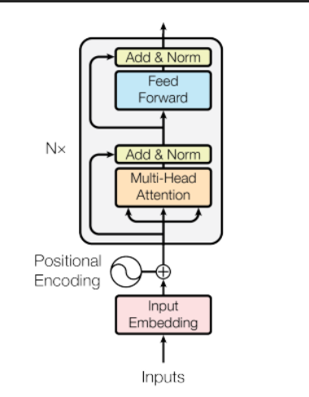

먼저 숲을 보기
읽는 친구와 쓰는 친구가
함께 번역을 배워요.
영어 문장 + 독일어 정답 쌍
↓
Encoder · 영어를 읽고 숫자 메모 만들기
↓ 메모를 참고
Decoder · 독일어 앞부분에서 다음 단어 맞히기
↓
Loss → backward → Adam.step → 반복
사용자가 준 그림은 어디인가요?

이 그림 전체가 self.encoder(src, src_mask)입니다. Encoder 안에는 임베딩·위치 표시와 여섯 EncoderLayer가 있습니다.
그림에는 Decoder와 Loss가 나오지 않습니다. Encoder 출력은 단어마다 512개의 숫자가 담긴 메모이고, 이 메모가 Decoder에 들어갑니다.
파일별 역할
| 파일·폴더 | 맡은 일 |
|---|---|
| conf.py | 특징 512, 층 6, Head 8, FFN 2048, 배치 128 등 설정 |
| data.py · util/tokenizer.py · util/data_loader.py | 영어·독일어 쌍, 단어 조각, 번호표, 배치 준비 |
| models/embedding | 단어 번호를 숫자 특징으로 바꾸고 자리 표시 더하기 |
| models/layers | Attention·FFN·정규화라는 작은 계산 부품 |
| models/blocks | 작은 부품을 조립한 EncoderLayer·DecoderLayer 한 층 |
| models/model | 여섯 층짜리 Encoder·Decoder와 전체 Transformer |
| train.py | 모델 조립, 학습, 검증, 좋은 가중치 저장 |
| util/bleu.py · graph.py | 기록용 점수 계산과 학습 곡선 표시 |
원문에서 확인한 실행 범위
train.py의 마지막 줄이 run(total_epoch=epoch, best_loss=inf)를 호출합니다. 학습은 train_iter, 중간 점검은 valid_iter를 사용합니다. test_iter는 준비되지만 이 run에서 사용하지 않습니다.
평가에도 정답 앞부분을 제공하며, 새 문장을 시작 토큰부터 끝까지 생성하는 별도 번역 루프는 없습니다. 교재는 현재 동작을 설명하며 원본 학습 코드를 바꾸지 않습니다.